2. 전달함수와 라플라스변환
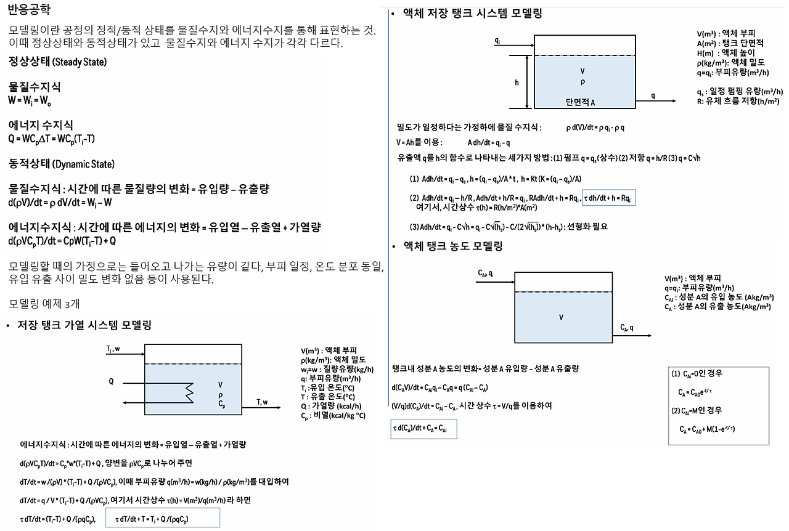
앞서 공부했었던 화학공정의 모델링을 살펴보면, 모델링의 대부분이 미분방정식으로 표현됨을 알 수 있었다. 이 미방을 풀기 위해 쓰는 방법이 라플라스 변환이다. 라플라스 변환을 쓰기전에 전달함수라는 것부터 살펴보자.
전달함수는 공정의 입력 변수와 출력변수 사이의 동적관계를 나타내주는 함수이다. 즉 입력값을 넣으면 출력값으로 바꿔주는 함수이다. 이때 전달함수는 미분관계식으로 나타나는데, 라플라스 변환을 통해 입력 변수와 출력 변수간의 대수적인 관계(즉 다항식 형태)로 바꿀 수 있다. 즉 전달함수를 라플라스변환하면 입력값과 출력값 사이에 대수적인 관계를 얻을 수 있다. 전달함수에 입력함수를 곱하면 출력변수를 얻을 수 있다.
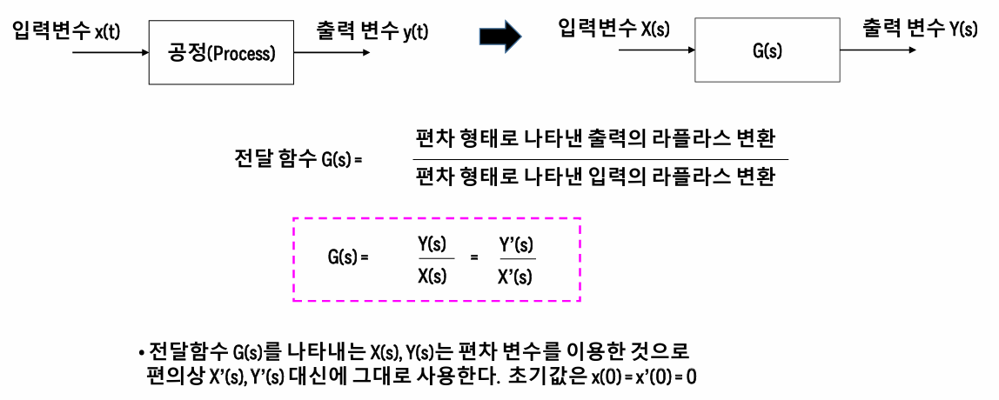
따라서 이번 포스팅에서는 먼저 라플라스 변환을 알아보도록 하자.
1.라플라스 변환을 이용한 미분방정식의 풀이 (feat 표 이용)
함수 f(t)를 라플라스변환한다는 것은, 다음 작업을 거친다는 것이다.
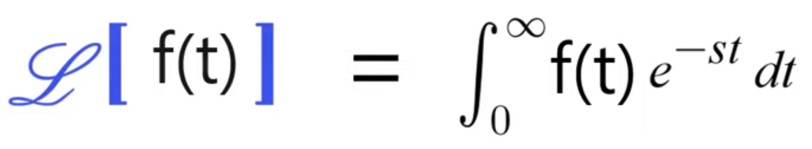
예를 들어 f(t)=C라는 상수함수를 라플라스 변환하면 다음과 같다.
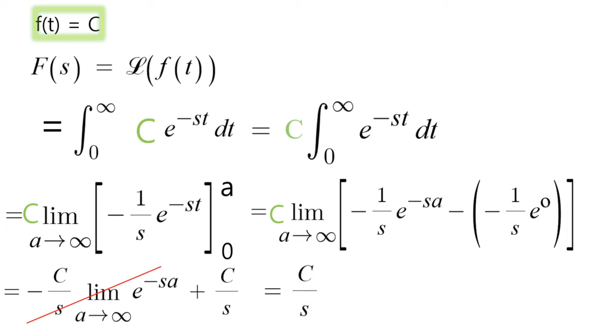
즉, f(t)가 무슨 함수든, 라플라스 공식을 통해 변환할 수 있다.
하지만 매번 변환하는 것은 번거로우므로, 이것을 변환해 정리해둔 표가 존재한다. 이 표를 한번 살펴보자.
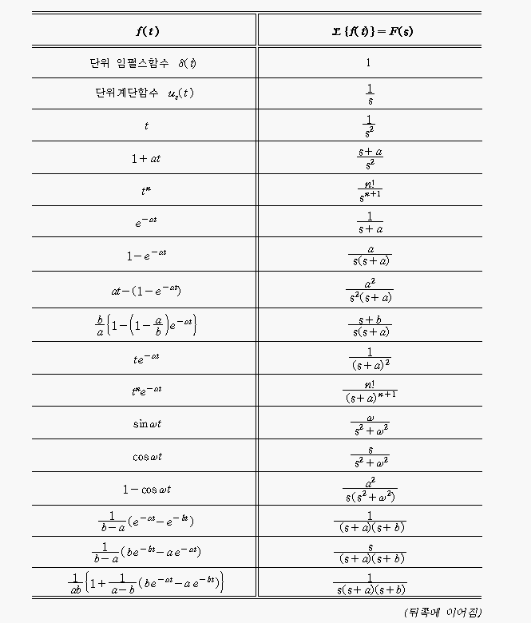 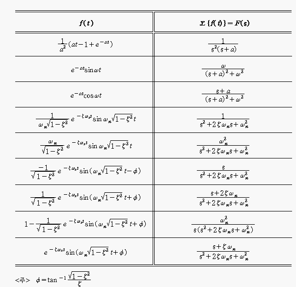
이때 표를 잘 살펴보면 단위 임펄스 함수와 단위 계단함수라는 것이 존재한다.
*단위계단함수
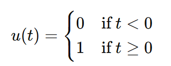
특정 시점부터 갑자기 값이 1이 되는 함수이다. 보통 u(t)이면 t=0부터 값이 1이되며, u(t-a)형태로 주어지면 a초부터 값이 1이 된다. 이걸 Shifted Step Function이라고 한다. 어떤 시스템이 특정 시점부터 작동하거나 할 때 쓰인다.
*단위 충격 함수
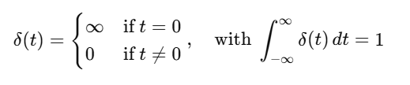
이건 그냥 괄호 안의 값이 0인 지점에서 값이 순간적으로 무한대이고, 나머지 모든 영역에서는 0인 함수를 의미한다. 폭이 매우 좁고 높이가 매우 큰 펄스이다.
또 라플라스 함수는 선형성을 갖는다. 선형성의 정의에 따라 다음이 성립한다.
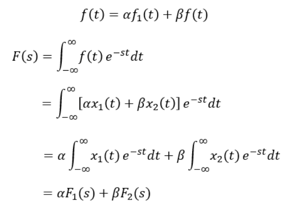
이 선형성을 이용하여 미분 방정식을 풀 때 라플라스변환을 다음처럼 적용할 수 있다.
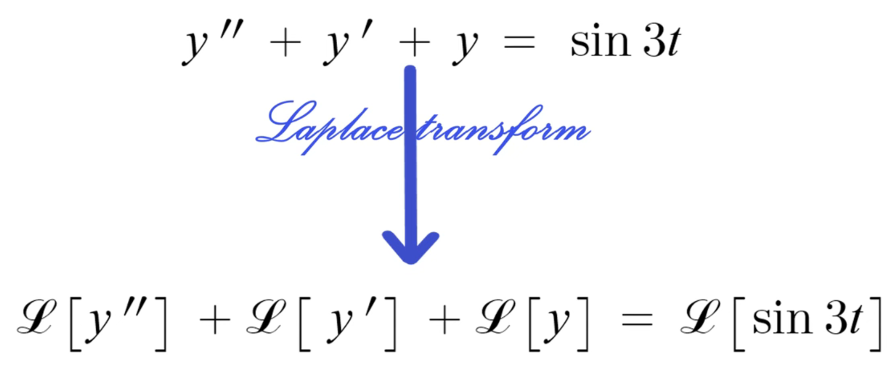
즉 라플라스를 쓰려면 그냥 항을 하나하나 다 라플라스 폼으로 변환시키면 된다고 할 수 있다.
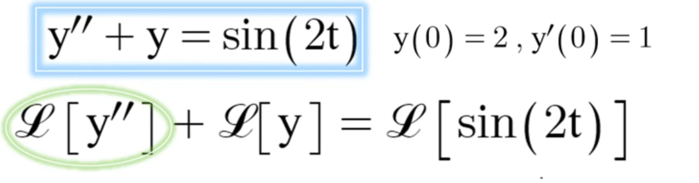
라플라스의 추가적인 이해를 위해 위 문제를 풀어보자.
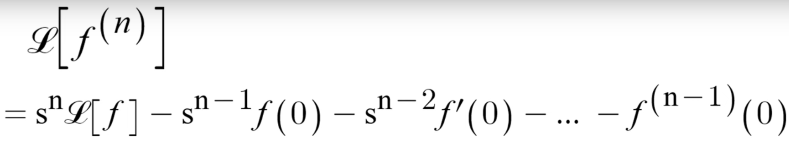
먼저 f의 n계 도함수를 라플라스 변환하는 공식은 위와 같다. 이에 대한 유도는 생략한다.
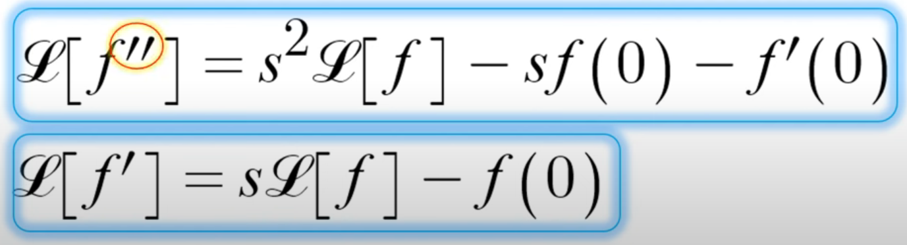
사실 밑에 파란 박스 친 두 공식이 더 중요하다. 위의 일반적인 n계 도함수의 라플라스 변환에서 n에 2, 1을 대입한 식이다.
이걸로 문제를 풀어보자.
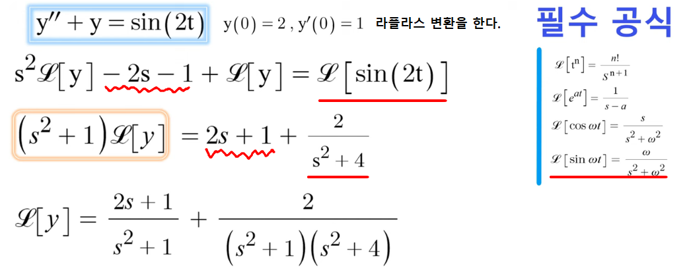
이제 맨 마지막에 나온 L(y) 식을 역변환할 것이다. 역변환이란 무엇을 변환했길래 이게 됐을까?를 추정하는 거라고 보면 된다. 를 시간 도메인 함수 f(t)로 되돌리는 과정이다. 보통 표를 통해 역추적한다.
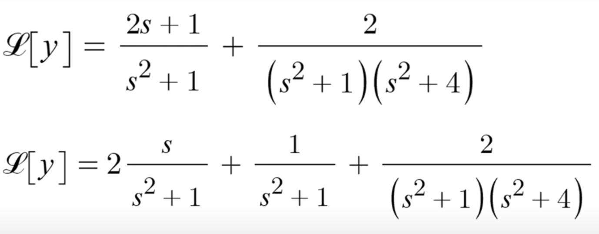
식을 일단 이렇게 쪼개본다. 여기서 맨 마지막 항을 해석하기 위해 헤비사이드 부분분수 분해라는 것이 필요하다.
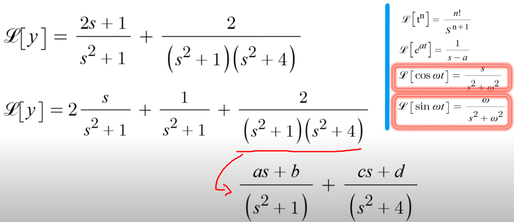
이는 빨간 박스친 공식의 우변에 나와있는 모양대로 식을 만들어주기 위함이다.
그냥 부분분수로 분해한다고 보면 된다.
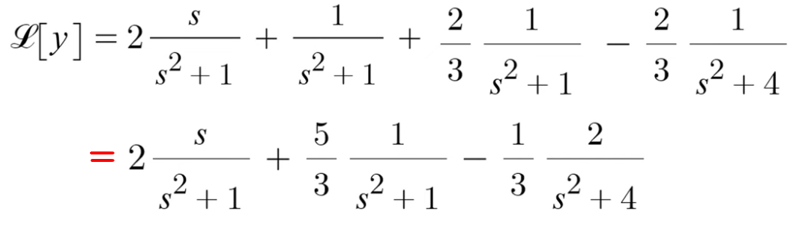
최종 분해시 위와 같은 식이 나온다.
이제 역변환을 하면 다음 식이 나온다.
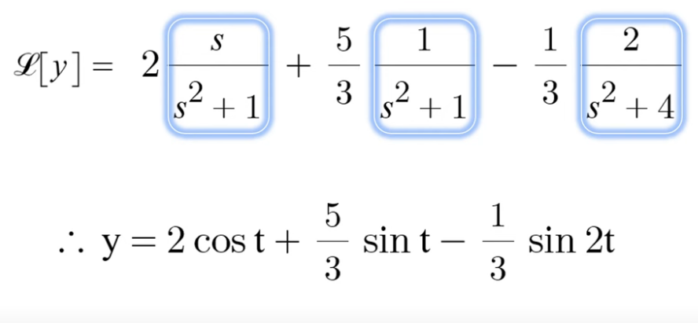
요약하면
1.어떤 미분방정식을 풀어야 할때, 그 식을 라플라스 변환시킨다.
2.이후 라플라스 변환된 L(y)를 좌변에 남겨두고, 모든 항을 우변으로 이항시킨다.
3. 라플라스 역 변환(선형성 이용)을 통해 원래 함수 y를 구한다.
https://ko.symbolab.com/solver/laplace-calculator
라플라스 변환 계산기
자유 라플라스 변환 계산기 - 함수의 라플라스 및 역 라플라스 변환을 단계별로 찾습니다.
ko.symbolab.com
위 계산 사이트를 이용하여 라플라스 변환과 해답을 쉽게 구할 수 있다.
2. s이동정리(제 1 이동정리)를 이용한 역라플라스 변환
이제 라플라스 역변환을 더 쉽게 도와주는 s이동정리를 알아보자. 이는 라플라스 역변환을 할 수 있는 함수를 늘려준다.
다음은 라플라스 공식의 기본형이다.
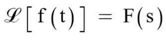
이때, 원래 f(t)에 e의 at승을 곱해주면 다음과 같이 식이 바뀐다.
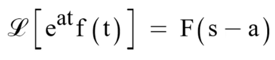
이게 s 이동정리이다. 이 증명은 라플라스의 정의에서 출발한다. 증명은 생략하나 혹시 궁금하면 다음 사진을 보아라.
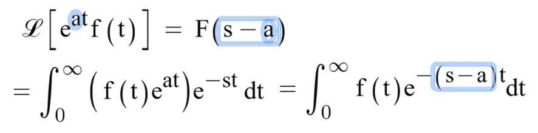
이걸 이용한 역변환의 예시를 살펴보자.
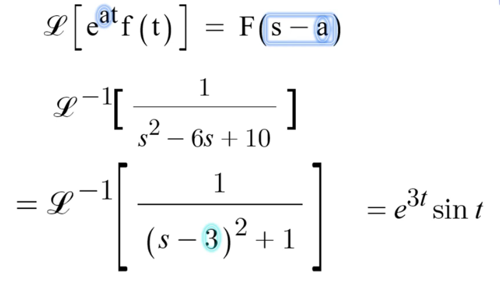
1/(s^2-6s+10)을 역변환하는 과정이다.
3.단위계단함수로 구간별 함수를 한 줄로 표현하기
단위계단함수 u_t란 특정 시점부터 1이되는 함수이다. 즉 uat는 x가 a일때 이후로 1이 된다는 뜻이다.
이걸로 아래 함수를 한줄로 표현해보자.
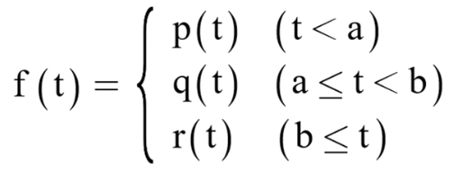
이를 한줄로 나타내면 다음과 같다.
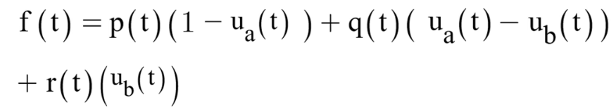
맨 처음 함수 p(t) 에 1-uat를 곱해주고, 그다음 q(t)에 (uat-ubt)를 곱해준다. 마지막 r(t)에는 (ubt)를 곱해준다.
이처럼 구간별로 나타내진 함수 또한 라플라스 변환을 할 수 있다.
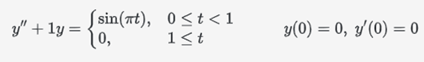
예를 들어 이런 문제를 풀 때, 우변을 계단함수를 통해 한 줄로 나타낸 후 라플라스 변환을 하여 쉽게 풀 수 있다.
이제 다시 본론으로 돌아가 라플라스변환과 전달함수의 관계를 살펴보자.
어떤 공정을 모델링하면 공정 동특성을 나타내주는 식이 나오게 되는데, 이것을 전달함수라고 한다. 자세히는 공정의 입력 변수와 출력변수 사이의 동적관계를 나타내주는 함수로 나타난다. 전달함수의 수학적 정의는 G(S)=출력의 라플라스/입력의 라플라스이다. 이는 보통 미분방정식으로 나타내기 때문에, 이것을 풀기 위해서는 라플라스변환이라는 스킬이 필요하다.
예를 들어 공정에 대한 미분방정식이 다음과 같이 주어졌을 경우, 전달함수를 구하는 과정은 다음과 같다.
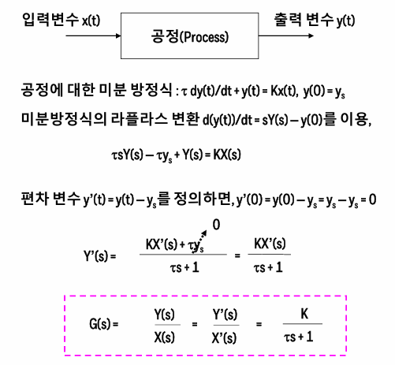
이 전달함수를 역변환시키면 실제 전달함수(NOT 라플라스 형태)를 구할 수 있게 된다.